One of the main objectives of the blvim package is to
ease the systematic exploration of the BLV model’s solution space when
\(\alpha\) and \(\beta\) vary. This is supported by a
collection of grid_* functions.
Locations and setup
We shall work with a regular grid of locations, in a symmetric (non-bipartite) case.
locations <- expand.grid(x = 1:5, y = 1:5)
locations$name <- LETTERS[1:25]
ggplot(locations, aes(x, y, label = name)) +
geom_text() +
coord_fixed()
We use the Euclidean distance between the points as the interaction costs.
And finally, we consider unitary productions and initial attractivenesses.
Computing a collection of models
The main function for systematic exploration is
grid_blvim(), which computes a collection of spatial
interaction models (the BLV models obtained by blvim()) for
all pairwise combinations of \(\alpha\)
and \(\beta\) provided.
For the \(\alpha\) parameter, we generally recommend focussing on values strictly larger than 1 (setting \(\alpha=1\) significantly slows down the convergence of the fixed-point algorithm used in the BLV model). For \(\beta\), we aim to cover local models (with a large \(\beta\)) and long-range ones (with a small \(\beta\)). Here, distances between positions range from 1 to approximately 7, so a typical range for \(\frac{1}{\beta}\) could be \([0.5 ; 4]\).
The collection of models is computed by grid_blvim() as
follows. Note that while we could specify the location data as
parameters of the call, it is generally simpler to do so on the
resulting sim_list().
models <- grid_blvim(costs,
location_prod,
alphas = seq(1.05, 2, length.out = 25),
betas = 1 / seq(0.5, 4, length.out = 25),
location_att,
bipartite = FALSE,
epsilon = 0.1,
iter_max = 5000,
conv_check = 10
)We specify now the location data.
destination_names(models) <- locations$name
destination_positions(models) <- as.matrix(locations[c("x", "y")])An important point to note is that the sim_list()
returned by grid_blvim() is homogeneous: it uses
the same cost matrix and the same location data. This is enforced in the
package because most of the exploration methods proposed would not make
sense for a heterogeneous collection of spatial interaction models.
Exploring the results
Single model extraction
The sim_list() object behaves like a read-only list. We
can therefore extract any of the models, for instance to display the
corresponding flows, as demonstrated below for the first model, using
both the standard matrix display and the position-based one.
autoplot(models[[1]]) +
scale_fill_gradient(low = "white", high = "black") +
coord_fixed()
autoplot(models[[10]],
flows = "full", with_positions = TRUE,
arrow = arrow(length = unit(0.01, "npc"))
) +
coord_fixed() +
scale_linewidth_continuous(range = c(0, 1))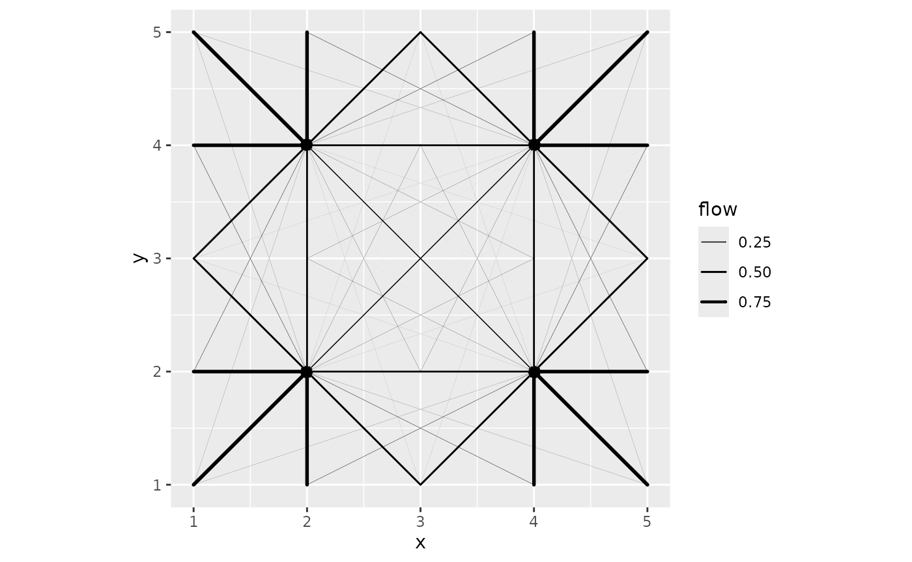
Variability plot
The sim_list object has a
ggplot2::autoplot() function that provides a variability
plot. The aim is to display statistics of the flows over the collection
of spatial interaction models in the list. The default representation
focuses on individual flows as shown below.
autoplot(models, with_names = TRUE) +
theme_light()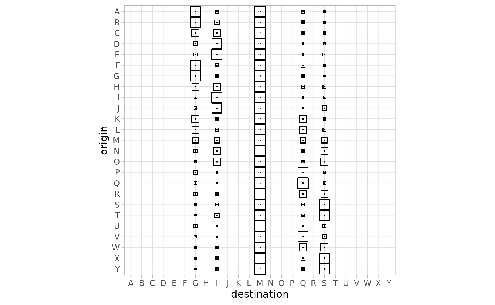
For instance, the M column shows the flows received from all locations by location M (the centre point of the locations). The thick squares correspond to the median of the flow received by M over all the models. The figure shows in particular that many of the locations do not receive incoming flow in any model.
The position-based figure shows only the destination flows, using circles to display statistics of those flows.
autoplot(models, flows = "destination", with_positions = TRUE) +
scale_size_continuous(range = c(0, 7)) +
coord_fixed()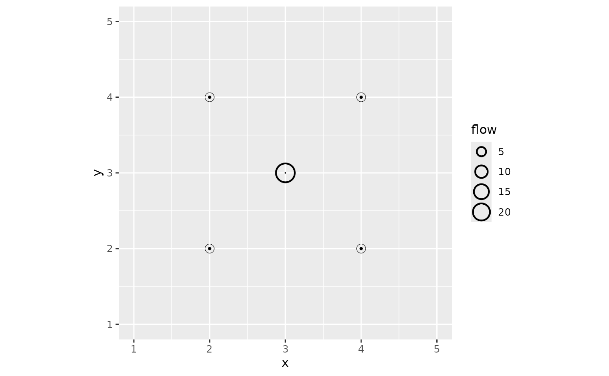
The figure confirms that the external locations receive no flow. The median flow received by M, the central location, is significantly larger than other flows. The tiny internal circle for this location shows the 0.05 quartile: this indicates that for a few models in the list, the central location does not receive any flow. This is illustrated for the first model of the list in the figure above.
Statistics-oriented display
In addition to the variability of the flows, we can display a
numerical value for each spatial interaction model on a single plot. To
facilitate this, the collection of models first has to be integrated
into a data frame-like model. This is done with the
sim_df() function.
models_df <- sim_df(models)The result is a data frame with a special sim column
that contains the original sim_list() object as well as the
parameters used to build the model (\(\alpha\) and \(\beta\)), diagnostics on the
blvim() runs, and the Shannon diversity() of
the models.
| alpha | beta | diversity | iterations | converged | sim |
|---|---|---|---|---|---|
| 1.050000 | 2 | 24.885897 | 640 | TRUE | c(0.6908…. |
| 1.089583 | 2 | 24.844876 | 910 | TRUE | c(0.6890…. |
| 1.129167 | 2 | 24.758832 | 2040 | TRUE | c(0.6875…. |
| 1.168750 | 2 | 23.174828 | 5001 | FALSE | c(0.6796…. |
| 1.208333 | 2 | 8.776566 | 2640 | TRUE | c(0.7026…. |
| 1.247917 | 2 | 5.770688 | 1160 | TRUE | c(0.5686…. |
The sim_df() object has a
ggplot2::autoplot() function which shows by default the
diversities of the models.
autoplot(models_df) +
scale_fill_viridis_c()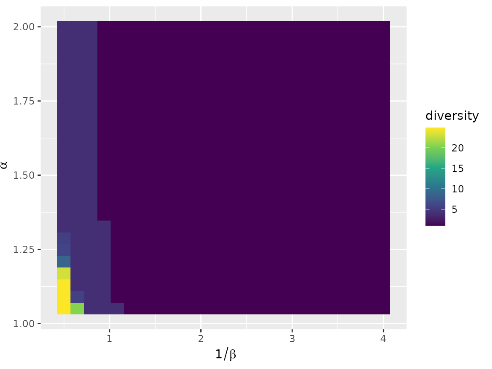
The figure shows, for each combination of parameters \(\alpha\) and \(\beta\), a coloured rectangle that
represents the chosen numerical value for the corresponding model. One
can display any column of the sim_df object, for instance
the convergence status.
autoplot(models_df, converged)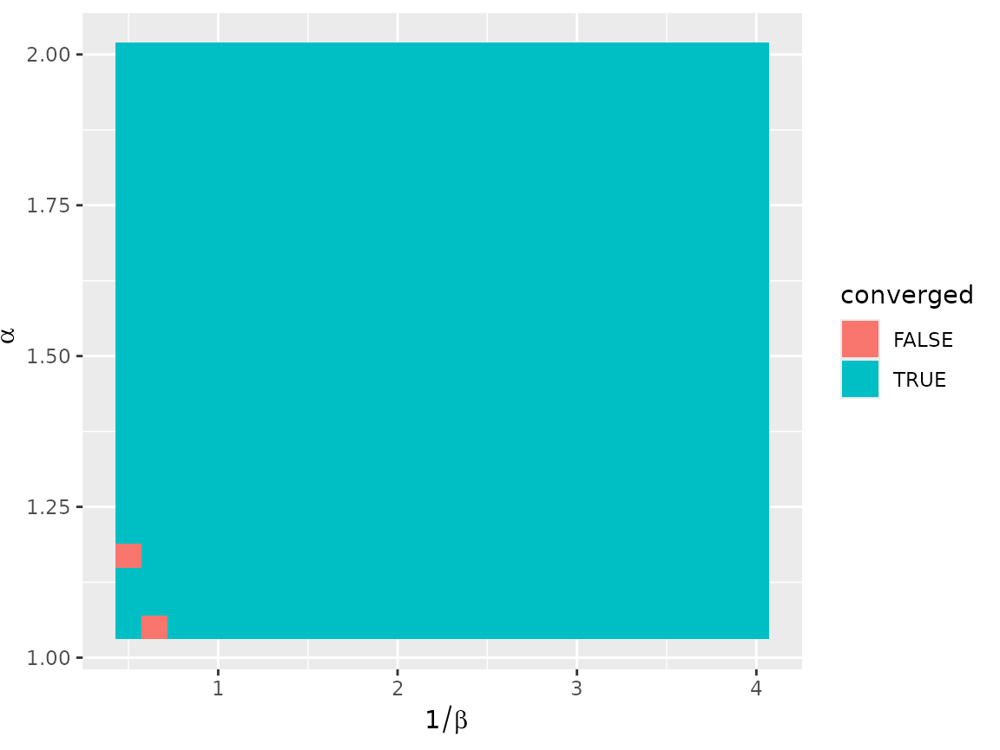
The autoplot.sim_df() function uses tidy evaluation,
which enables the user to compute interesting values on the fly, as in
the following figure that displays the number of terminals per model,
according to the Nystuen and Dacey definition.
autoplot(models_df, diversity(sim, "ND")) +
scale_fill_viridis_c()
Organising the results
Clustering the models
The set of all models, while structured, can be difficult to
understand completely using only the tools presented above. To take the
analysis further, it may be useful to cluster the models and to display
representative elements of the clusters. To ease this task, we support
distance-based approaches (such as hierarchical clustering and
partitioning around medoids) via sim_distance(). For
instance, the following call computes all pairwise Euclidean distances
between the destination flows of the models in a
sim_list().
models_dist <- sim_distance(models, "destination")This can then be used as the input of a hierarchical clustering.
models_hc <- hclust(models_dist, method = "ward.D2")For the studied example, the structure of the model set is highly specific, as a very large subset of them is the same model, with all the flow sent to the central location. This is partly visible in the dendrogram of the clustering, with the large cluster on the left.
plot(models_hc, hang = -1, labels = FALSE)
Since we use clustering primarily to explore the result set, we can set the number of clusters to an arbitrary value: we are not looking for a clustering structure but rather we want to summarise the model set. A small number of clusters will generally provide a summary that is too crude, while a large number will be difficult to analyse. Here, we arbitrarily chose 16 clusters.
The best way to integrate the clustering result for further analysis
is to add a new column to the sim_df() giving the class
membership, as follows for instance:
This can be immediately used in the standard sim_df()
visualisation.
autoplot(models_df, cluster)
Showing cluster variability
Two functions are available in blvim to leverage any
partition of a collection of spatial interaction models. Both of them
use ggplot2::facet_wrap() to combine standard individual
visualisations into an organised one. The first function,
grid_var_autoplot(), shows a variability representation for
each of the groups identified by a partitioning variable in a
sim_df() object.
Using the clustering obtained above, we simply execute:
grid_var_autoplot(models_df, cluster)
This gives a flow variation panel for each of the 16 clusters. The redundancy in the display suggests that we requested too many clusters, but apart from that, the representation outlines a collection of very distinct model classes:
- a model of central dominance (clusters 13 to 16)
- models with a dominant diagonal (mostly self-interaction, in clusters 1 to 3)
- models where the central location does not receive any flow (clusters 4 and 9)
- more complex patterns in clusters 5 to 8, and 10 to 12
We can gain further insight into the different behaviours using the location positions, provided we focus on the destination flows.
grid_var_autoplot(models_df, cluster,
flows = "destination",
with_positions = TRUE
) +
scale_size_continuous(range = c(0, 4)) +
coord_fixed()
The fact that we see only one circle at most per position illustrates the quality of the clusters (this was also the case in the previous visualisation, but less clearly). Indeed, this means that the destination flows are almost constant in each cluster of models. Moreover, this representation, while blind to the actual pairwise flows, shows the structure of the clusters. In particular, it emphasises subtle differences between cluster 13 and clusters 14 to 16 (and similarly for e.g. clusters 10 and 11).
Finding representative models
In addition to the variability plots, one may want to extract some
representative examples from each cluster. The
median.sim_list() function provides a solution based on the
concept of generalised median (also called medoid): the
function returns, from a collection of spatial interaction models in a
sim_list(), the one that is on average the closest to all
the other models. The distance used is one of the distances provided by
grid_distance(). It is recommended to use the same distance
for clustering, but this is not enforced by the function (as it applies
to any sim_list()). In practice, we use
tapply() to compute a list of medoids, and then build a
sim_list() and a sim_df().
models_centre <- sim_list(tapply(models, models_df$cluster,
median,
flows = "destination"
))
models_centre_df <- sim_df(models_centre)This small collection of models can then be displayed exhaustively,
using grid_autoplot(). This function uses
ggplot2::facet_wrap() to show a standard spatial
interaction model graphical representation (the ones provided by
autoplot.sim()) for each of the models in a
sim_df. For instance, one can get the flows of all medoids
as follows.
grid_autoplot(models_centre_df) +
scale_fill_gradient(low = "white", high = "black") +
coord_fixed()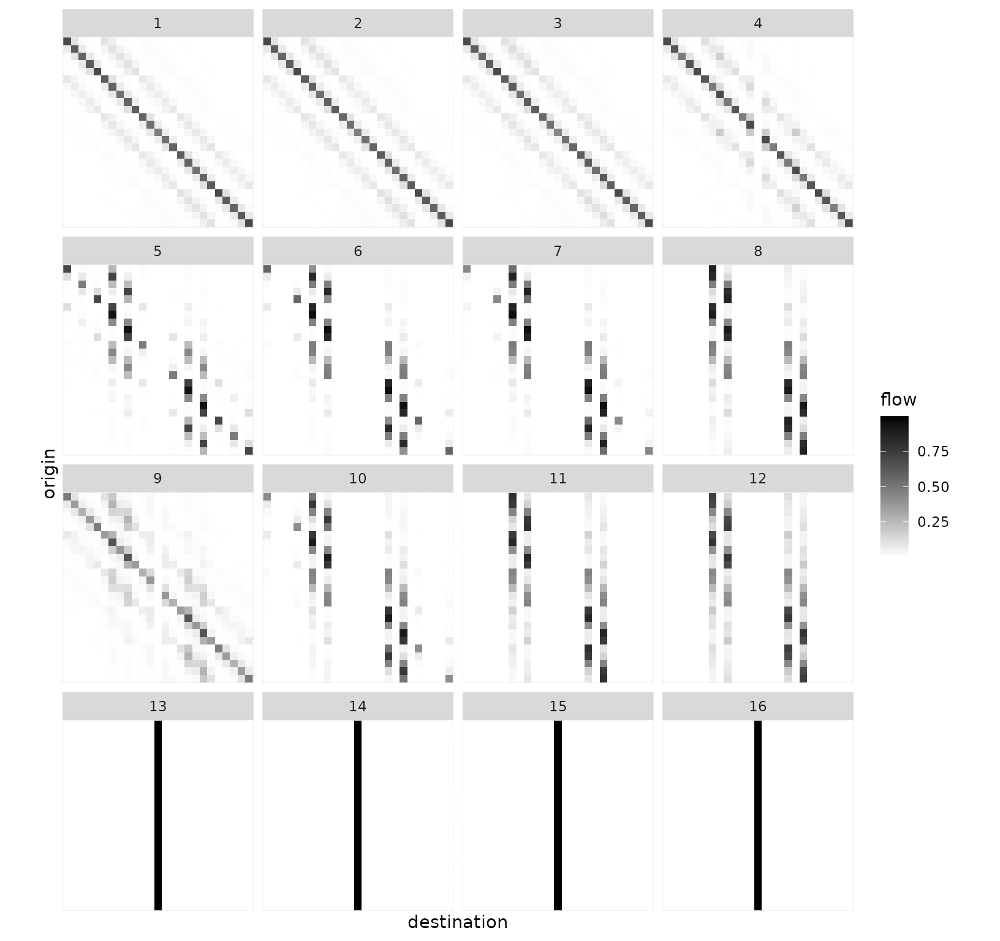
The function supports all the individual representations, for instance flows with positions.
grid_autoplot(models_centre_df,
flows = "full", with_positions = TRUE,
arrow = arrow(length = unit(0.015, "npc"))
) +
scale_linewidth_continuous(range = c(0, 0.5)) +
coord_fixed()
Destination flows with positions are also supported.
grid_autoplot(models_centre_df, flows = "destination", with_positions = TRUE) +
scale_size_continuous(range = c(0, 6)) +
coord_fixed()
In this example, the structure of the result collection is quite simple and was already captured to a large extent by the variability plots. In more complex situations, the series of graphics are complementary and give a better insight into the solution space.
Real-world examples
European cities
Let us analyse the eurodist dataset, which consists of
road distances between 21 cities in Europe. We use approximate
coordinates of those cities obtained from OpenStreetMap.
data("eurodist")
eurodist_names <- labels(eurodist)
eurodist_names[match("Lyons", eurodist_names)] <- "Lyon"
eurodist_names[match("Marseilles", eurodist_names)] <- "Marseille"
eurodist_mat <- as.matrix(eurodist)
colnames(eurodist_mat) <- eurodist_names
rownames(eurodist_mat) <- eurodist_names
eurodist_coord <- data.frame(
longitude = c(
23.7337556, 2.14541, 4.3386684, 1.8110332, -1.5839619,
6.94851185, 12.56571, 6.12186775, -5.3482947, 10.1185387,
4.1148457, -9.1655069, 4.83042935, -3.7034351, 5.3805535,
8.90758575, 11.6032322, 2.3222823, 12.5451136, 18.0710935,
16.37833545
),
latitude = c(
37.9726176, 41.31120535, 50.89415265, 50.9338734, 49.6456093,
50.84446155, 55.67613, 46.20823855, 36.1113418, 53.57845325,
51.96912755, 38.7076287, 45.7591956, 40.47785335, 43.28032785,
45.48039615, 48.1235428, 48.8787706, 41.8983351, 59.3251172,
48.1653537
),
name = eurodist_names
)This yields the following map.
ggplot(eurodist_coord, aes(longitude, latitude, label = name)) +
geom_point() +
ggrepel::geom_label_repel() +
coord_sf(crs = "epsg:4326")
Models
We fit a collection of SIMs with a wide range of values for both parameters.
euro_models <- grid_blvim(eurodist_mat,
rep(1, 21),
alphas = seq(1.05, 1.75, length.out = 30),
betas = 1 / seq(50, 750, length.out = 30),
rep(1, 21),
bipartite = FALSE,
epsilon = 0.05,
iter_max = 40000,
conv_check = 50
)
destination_positions(euro_models) <- as.matrix(eurodist_coord[1:2])
euro_models_df <- sim_df(euro_models)Most parameter pairs lead to relatively fast convergence, with the exception of a few values.
autoplot(euro_models_df, iterations) +
scale_fill_viridis_c()
The full range of diversity possible with 21 cities is covered in the parameter space, which indicates that extending the parameter range will unlikely uncover SIMs that differ significantly from those obtained with the chosen range.
autoplot(euro_models_df, diversity) +
scale_fill_viridis_c()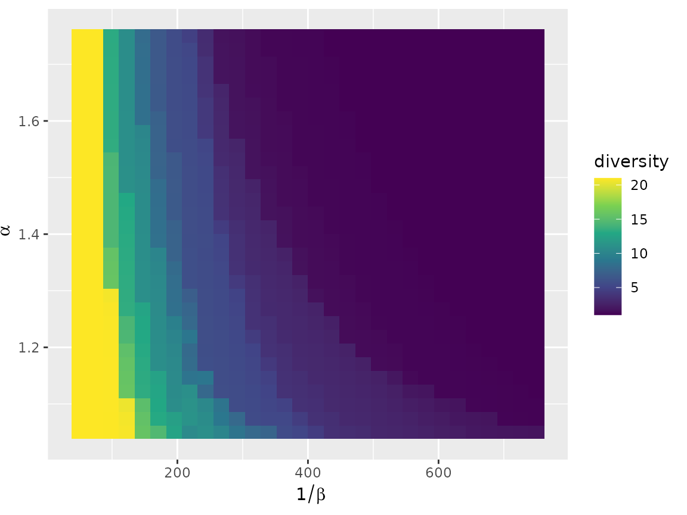
Variability plot
The flow variability plot outlines a few cities as potentially dominant. Lyon is the strongest. This is explained by its central position on the map. We expect to find it as the single dominant city in many configurations. Hook of Holland and Brussels also appear, but to a lesser extent. Gibraltar is also potentially active in some configurations. Athens and Stockholm are frequently the sole recipients of their own flow, probably owing to their isolated positions.
autoplot(euro_models, with_names = TRUE) +
theme(axis.text.x = element_text(angle = 90, vjust = 0.5, hjust = 1))
Destination flows tell the same story. Notably, most of the cities have a null median incoming flow, apart from Athens, Gibraltar, Lyon and Stockholm. In addition, most of the cities have a 0.95 quantile of 1, which corresponds to local configurations, that is situations when \(\beta\) is large enough to prevent any external flows. Only Brussels and Hook of Holland stand out (in addition to the four cities mentioned above).
autoplot(euro_models, flows = "destination", with_names = TRUE) +
coord_flip()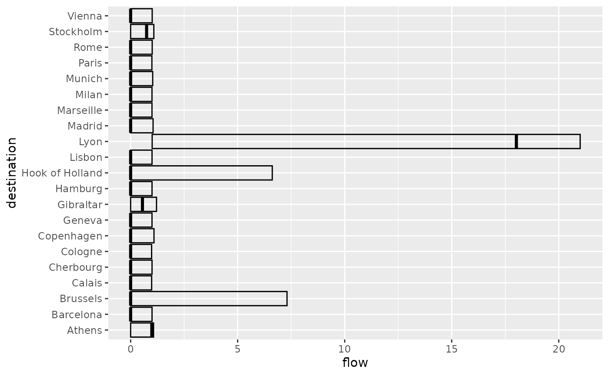
autoplot(euro_models,
flows = "destination", with_positions = TRUE,
with_names = TRUE
) +
scale_size_continuous(range = c(0, 6)) +
coord_sf(crs = "epsg:4326")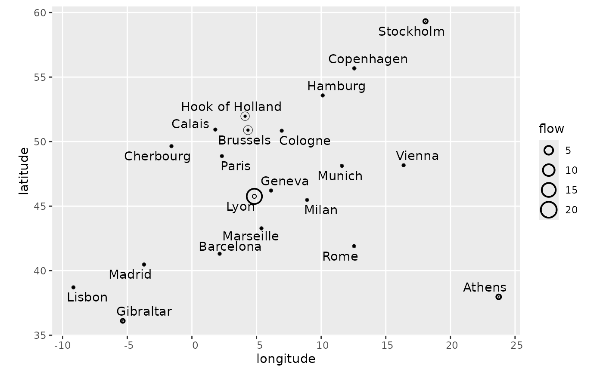
Clustering
We apply the same clustering strategy as with the artificial data: 16 clusters obtained with hierarchical clustering using the Ward criterion.
euro_models_dist <- sim_distance(euro_models, "destination")
euro_models_hc <- hclust(euro_models_dist, method = "ward.D2")The dendrogram clearly shows three main clusters, but as explained above, the role of clustering is to facilitate exploration of the result spaces rather than to identify distinct clusters.
plot(euro_models_hc, hang = -1, labels = FALSE)The clusters are well organised on the parameter set.
euro_models_df$cluster <- as.factor(cutree(euro_models_hc, k = 16))
autoplot(euro_models_df, cluster) +
theme(legend.position = "bottom") +
guides(fill = guide_legend(nrow = 2))
The variability plot shows mostly isolated circles with no inner or outer ring. This means that the clusters are relatively homogeneous in terms of destination flows, and thus median flows will give a good idea of typical behaviours.
grid_var_autoplot(euro_models_df, cluster,
flows = "destination",
with_positions = TRUE
) +
scale_size_continuous(range = c(0, 6)) +
coord_sf(crs = "epsg:4326")
Those behaviours are visible both at the destination flow level (above) and at the flow level (below):
- Clusters 1 to 3 correspond to situations where most of the flows are local (hence the importance of the diagonal flow), with a progressive shift towards sending flow to Lyon. Brussels is also important in clusters 2 and 3.
- Clusters 4, 6 and 7 maintain a relatively strong diagonal (self) flow with more flows sent to Lyon and a transition between Brussels and Hook of Holland
- Clusters 5, 8 and 9 are intermediate situations where some cities play the role of local attractors, e.g., Rome and Vienna, but the concentration on external cities and Lyon and Brussels (5 and 8) or Hook of Holland (9) is progressing.
- Clusters 10 to 12 are situations where both Lyon and Hook of Holland share incoming flows, with more (10) or fewer (12) flows reaching external cities such as Stockholm, Athens and the trio Gibraltar, Lisbon and Madrid.
- Clusters 13 to 15 show Lyon as the dominating city, while in cluster 16, Lyon shares its incoming flow with Hook of Holland.
grid_var_autoplot(euro_models_df, cluster)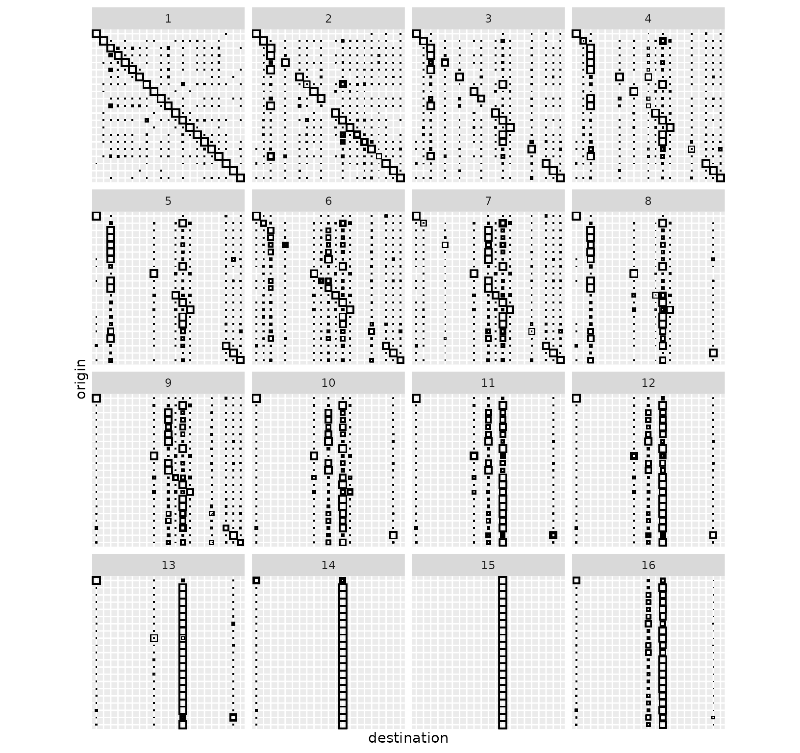
Medoids
Finally, we look at medoids.
euro_models_centre <- sim_list(tapply(euro_models, euro_models_df$cluster,
median,
flows = "destination"
))
euro_models_centre_df <- sim_df(euro_models_centre)The medoids confirm the analysis given above.
grid_autoplot(euro_models_centre_df) +
scale_fill_gradient(low = "white", high = "black") +
coord_fixed()
grid_autoplot(euro_models_centre_df,
flows = "destination",
with_positions = TRUE
) +
scale_size_continuous(range = c(0, 6)) +
coord_sf(crs = "epsg:4326")
grid_autoplot(euro_models_centre_df,
with_positions = TRUE, arrow = arrow(length = unit(0.015, "npc"))
) +
scale_linewidth_continuous(range = c(0, 0.75)) +
coord_sf(crs = "epsg:4326")
To further the analysis, one can focus on a particular medoid, for instance cluster 1:
autoplot(euro_models_centre[[1]],
flows = "full", with_positions = TRUE,
arrow = arrow(length = unit(0.015, "npc"))
) +
scale_linewidth_continuous(range = c(0, 2)) +
coord_sf(crs = "epsg:4326")
Or cluster 5:
autoplot(euro_models_centre[[5]],
flows = "full", with_positions = TRUE,
arrow = arrow(length = unit(0.015, "npc"))
) +
scale_linewidth_continuous(range = c(0, 2)) +
coord_sf(crs = "epsg:4326")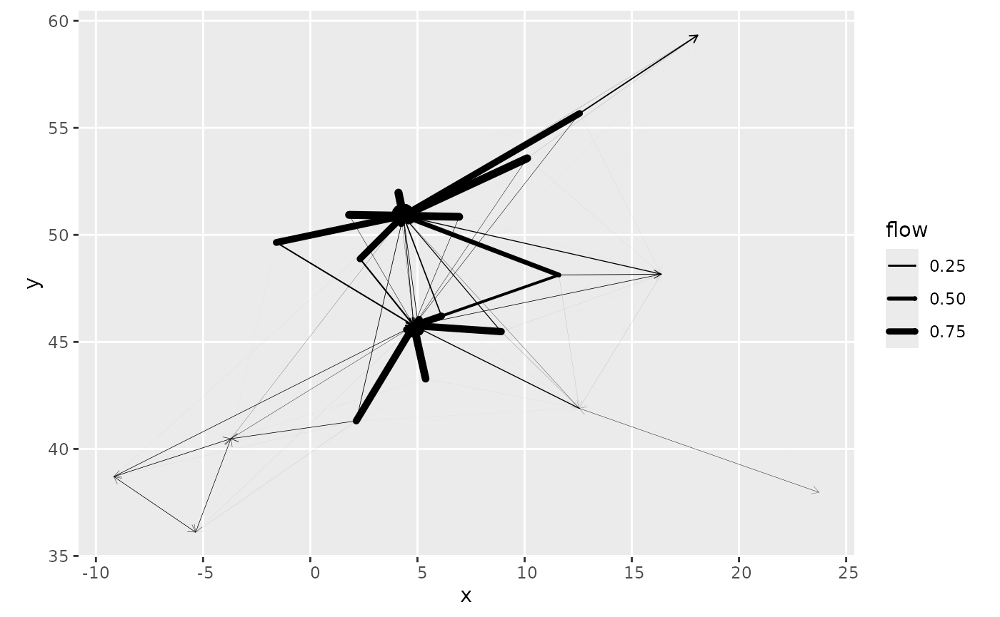
Finally, one can randomly select a subset of the models in a cluster
and use grid_autoplot() to display these models all at
once. This offers a way to visually assess the variability within that
cluster. For instance, in the figure below for cluster 4, most of the
models are very similar, but some differences exist, such as the flows
to Hamburg and Copenhagen, whose level varies across the configurations
(compare 6 to 7, for instance).
set.seed(0)
euro_models_idx <- sample(which(euro_models_df$cluster == 4), 16)
euro_models_cl4_sample <- euro_models[euro_models_idx]
euro_models_cl4_sample_df <- sim_df(euro_models_cl4_sample)
grid_autoplot(euro_models_cl4_sample_df, with_positions = TRUE) +
scale_linewidth_continuous(range = c(0, 1)) +
coord_sf(crs = "epsg:4326")
French cities
We use the french_cities data set to illustrate the
bipartite case when origin and destination locations differ. Here we
consider flows from the largest French cities (in terms of population)
to the smallest ones. As shown below, the distribution of the smallest
cities is not all uniform as they cluster around large ones, especially
around Paris.
big_cities <- french_cities[1:20, ]
small_cities <- french_cities[102:121, ]
fr_cities <- rbind(big_cities, small_cities)
fr_cities$type <- c(rep("origin", 20), rep("destination", 20))
ggplot(
fr_cities,
aes(x = th_longitude, y = th_latitude, color = type)
) +
geom_point() +
coord_sf(crs = "epsg:4326")
Production effects
frcosts <- french_cities_distances[1:20, 102:121] / 1000
fr_prod <- french_cities$population[1:20]
fr_attr <- rep(1, 20)
origin_data <- list(
names = french_cities$name[1:20],
positions = as.matrix(french_cities[
1:20,
c("th_longitude", "th_latitude")
])
)
destination_data <- list(
names = french_cities$name[102:121],
positions = as.matrix(french_cities[
102:121,
c("th_longitude", "th_latitude")
])
)As we have information about the cities, we may use it to drive the model. In particular, population sizes are natural production constraints. As France is somewhat centralised, Paris is by far the largest city. The combined population of Marseille, Lyon and Toulouse is smaller than the Paris population. In addition, there is a sharp drop in population size between Toulouse, with roughly 500,000 inhabitants, and Nice with 350,000 inhabitants.
Consequently, using population sizes directly as a production
constraint may lead to some extreme models. To investigate this, we use
the global analysis permitted by grid_blvim() and
associated functions.
We use first the logarithm of the population as the production constraint.
fr_models <- grid_blvim(frcosts,
log(fr_prod),
alphas = seq(1.05, 1.75, length.out = 30),
betas = 1 / seq(5, 200, length.out = 30),
fr_attr,
epsilon = 0.05,
iter_max = 40000,
conv_check = 50,
origin_data = origin_data,
destination_data = destination_data
)
fr_models_df <- sim_df(fr_models)The diversities of the models are relatively small as shown below, despite relatively short cut-off distances (the smallest value of \(\frac{1}{\beta}\) is 5 km). The degenerate patterns with bipartite models are different from the diagonal ones obtained with non-bipartite models. If we decrease the cut-off distance too much (i.e. if we use large values of \(\beta\)), each origin location will send all of its production to its nearest neighbours. Here this leads to a maximum diversity of 8.44 while in a non-bipartite case, we would expect a maximum around 20 (for 20 cities).

With the log transform, small cities around Paris do not
receive much flow, apart for Saint-Ouen-Sur-Seine, Fontenay-sous-Bois
and Sartrouville. Notice the absence of diagonal patterns.
autoplot(fr_models, with_names = TRUE) +
theme_light() +
theme(axis.text.x = element_text(angle = 90, vjust = 0.5, hjust = 1)) +
labs(title = "Log population")
autoplot(fr_models,
flows = "destination", with_names = TRUE,
with_positions = TRUE
) +
coord_sf(crs = "epsg:4326") +
labs(title = "Log population")
We then use the population size directly.
fr_models_direct <- grid_blvim(frcosts,
fr_prod,
alphas = seq(1.05, 1.75, length.out = 30),
betas = 1 / seq(5, 200, length.out = 30),
fr_attr,
epsilon = 0.05,
iter_max = 40000,
conv_check = 50,
origin_data = origin_data,
destination_data = destination_data
)
fr_models_direct_df <- sim_df(fr_models_direct)We observe a trend of smaller diversities with a maximum of 6.97. The dominance of Paris as a producer tends to limit the emergence of multiple receivers and to concentrate the flows on a smaller number of cities.

In this case the flow from Paris becomes dominant and more small cities around Paris receive flow, with a limited effect on other cities, as the flows are mostly local. This is revealed in the graphical representation thanks to the origin based normalisation.
autoplot(fr_models_direct, with_names = TRUE, normalisation = "origin") +
theme_light() +
theme(axis.text.x = element_text(angle = 90, vjust = 0.5, hjust = 1)) +
labs(title = "Population")
The geographical representation shows the emergence of these smaller cities.
options("ggrepel.max.overlaps" = 20)
autoplot(fr_models_direct,
flows = "destination", with_names = TRUE,
with_positions = TRUE
) +
coord_sf(crs = "epsg:4326") +
labs(title = "Population")
By default, the flows are not normalised in the variability plot, and the global normalisation emphasises Paris’ dominance and its preferred destination, Saint-Ouen-Sur-Seine, more strongly. This representation shows similar patterns for Marseille with Arles and to a lesser extent for Lyon with Vaulx-en-Velin, and Toulouse with Arles and Albi.
autoplot(fr_models_direct, with_names = TRUE, normalisation = "full") +
theme_light() +
theme(axis.text.x = element_text(angle = 90, vjust = 0.5, hjust = 1)) +
labs(title = "Population global normalisation")
Clustering
To investigate the differences between production constraints in more detail, we can cluster the results. As shown by the dendrograms and the cluster maps, the results are significantly influenced by the production constraints.
fr_models_dist <- sim_distance(fr_models, "destination")
fr_models_hc <- hclust(fr_models_dist, method = "ward.D2")
plot(fr_models_hc, hang = -1, labels = FALSE)
fr_models_df$cluster <- as.factor(cutree(fr_models_hc, k = 16))
autoplot(fr_models_df, cluster) +
theme(legend.position = "bottom") +
guides(fill = guide_legend(nrow = 2)) +
labs(title = "Log population")
fr_models_direct_dist <- sim_distance(fr_models_direct, "destination")
fr_models_direct_hc <- hclust(fr_models_direct_dist, method = "ward.D2")
plot(fr_models_direct_hc, hang = -1, labels = FALSE)
fr_models_direct_df$cluster <- as.factor(cutree(fr_models_direct_hc, k = 16))
autoplot(fr_models_direct_df, cluster) +
theme(legend.position = "bottom") +
guides(fill = guide_legend(nrow = 2)) +
labs(title = "Population") The per-cluster variability plots are very informative. They show very
limited variability within each cluster and display different
configurations. Contrast for instance cluster 13 for the log population
model with cluster 16 for the direct population model. With the log
population model, there are configurations with a single dominating
site, cluster 13 (this aligns with the minimal value of the diversity
which is 1). On the contrary, the direct population model does not lead
to such as situation, we always have at least two important sites, as in
cluster 16 (again, this aligns with the minimal value of the diversity,
1.95).
The per-cluster variability plots are very informative. They show very
limited variability within each cluster and display different
configurations. Contrast for instance cluster 13 for the log population
model with cluster 16 for the direct population model. With the log
population model, there are configurations with a single dominating
site, cluster 13 (this aligns with the minimal value of the diversity
which is 1). On the contrary, the direct population model does not lead
to such as situation, we always have at least two important sites, as in
cluster 16 (again, this aligns with the minimal value of the diversity,
1.95).
grid_var_autoplot(fr_models_df, cluster,
flows = "destination",
with_positions = TRUE
) +
scale_size_continuous(range = c(0, 6)) +
coord_sf(crs = "epsg:4326") +
labs(title = "Log population")
grid_var_autoplot(fr_models_direct_df, cluster,
flows = "destination",
with_positions = TRUE
) +
scale_size_continuous(range = c(0, 6)) +
coord_sf(crs = "epsg:4326") +
labs(title = "Population") One could prolong the analysis by investigating individual clusters, for
instance by displaying the median models or a selection of diverse
models.
One could prolong the analysis by investigating individual clusters, for
instance by displaying the median models or a selection of diverse
models.